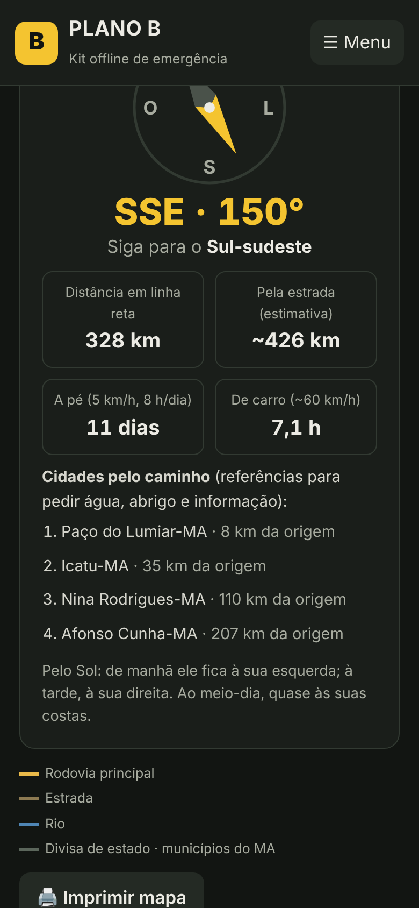

Atenção
A internet caiu.
A internet caiu.
E agora?
Sem Google, sem mapa, sem sinal. O Plano B é o kit de emergência que funciona 100% offline: água segura, comida, mapa do Brasil com rumo sem GPS, primeiros socorros, parto de emergência e até a Bíblia. No computador, no celular e no papel.
⚡ Pix ou cartão · acesso na hora🛡️ Garantia de 7 dias💾 Pagamento único
Sem sinal · funcionando
